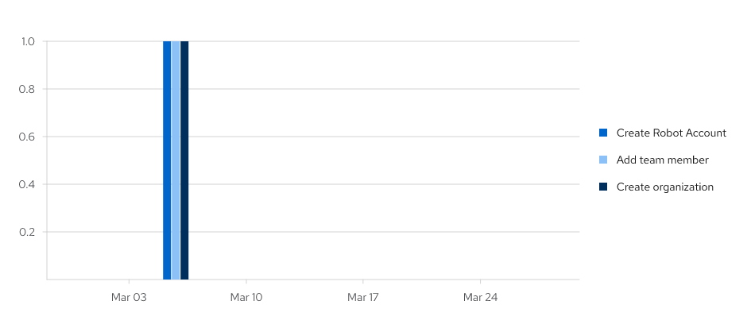

- Preface
- 1. Red Hat Quay tenancy model
- 2. Red Hat Quay user accounts overview
- 3. Red Hat Quay organizations overview
- 4. Red Hat Quay repository overview
- 5. Red Hat Quay Robot Account overview
- 6. Access management for Red Hat Quay
- 7. Image tags overview
- 7.1. Viewing and modifying image tag information
- 7.2. Adding a new image tag to an image
- 7.3. Adding and managing labels
- 7.4. Setting tag expirations
- 7.5. Fetching an image by tag or digest
- 7.6. Viewing Red Hat Quay tag history
- 7.7. Viewing usage logs
- 7.8. Viewing Clair security scans
- 7.9. Deleting an image tag
- 7.10. Reverting tag changes
Preface
Red Hat Quay container image registries serve as centralized hubs for storing container images. Users of Red Hat Quay can create repositories to effectively manage images and grant specific read (pull) and write (push) permissions to the repositories as deemed necessary. Administrative privileges expand these capabilities, allowing users to perform a broader set of tasks, like the ability to add users and control default settings.
This guide offers an overview of Red Hat Quay’s users and organizations, its tenancy model, and basic operations like creating and deleting users, organizations, and repositories, handling access, and interacting with tags.
Chapter 1. Red Hat Quay tenancy model
Before creating repositories to contain your container images in Red Hat Quay, you should consider how these repositories will be structured. With Red Hat Quay, each repository requires a connection with either an Organization or a User. This affiliation defines ownership and access control for the repositories.
Tenancy model

- Organizations provide a way of sharing repositories under a common namespace that does not belong to a single user. Instead, these repositories belong to several users in a shared setting, such as a company.
- Teams provide a way for an Organization to delegate permissions. Permissions can be set at the global level (for example, across all repositories), or on specific repositories. They can also be set for specific sets, or groups, of users.
-
Users can log in to a registry through the web UI or a by using a client like Podman and using their respective login commands, for example,
$ podman login. Each user automatically gets a user namespace, for example,<quay-server.example.com>/<user>/<username>, orquay.io/<username>if you are using Quay.io. - Superusers have enhanced access and privileges through the Super User Admin Panel in the user interface. Superuser API calls are also available, which are not visible or accessible to normal users.
- Robot accounts provide automated access to repositories for non-human users like pipeline tools. Robot accounts are similar to OpenShift Container Platform Service Accounts. Permissions can be granted to a robot account in a repository by adding that account like you would another user or team.
Chapter 2. Red Hat Quay user accounts overview
A user account represents an individual with authenticated access to the platform’s features and functionalities. User accounts provide the capability to create and manage repositories, upload and retrieve container images, and control access permissions for these resources. This account is pivotal for organizing and overseeing container image management within Red Hat Quay.
You can create and delete new users on the Red Hat Quay UI or by using the Red Hat Quay API.
2.1. Creating a user account
Use the following procedure to create a new user for your Red Hat Quay repository using the UI.
Prerequisites
- You are logged into your Red Hat Quay deployment as a superuser.
Procedure
- Log in to your Red Hat Quay repository as the superuser.
- In the navigation pane, select your account name, and then click Super User Admin Panel.
- Click the Users icon in the column.
- Click the Create User button.
- Enter the new user’s Username and Email address, and then click the Create User button.
You are redirected to the Users page, where there is now another Red Hat Quay user.
NoteYou might need to refresh the Users page to show the additional user.
On the Users page, click the Options cogwheel associated with the new user. A drop-down menu appears, as shown in the following figure:

- Click Change Password.
Add the new password, and then click Change User Password.
The new user can now use that username and password to log in using the web UI or through their preferred container client, like Podman.
2.2. Deleting a user
Use the following procedure to delete a user from your Red Hat Quay repository using the UI. Note that after deleting the user, any repositories that the user had in their private account become unavailable.
In some cases, when accessing the Users tab in the Superuser Admin Panel of the Red Hat Quay UI, you might encounter a situation where no users are listed. Instead, a message appears, indicating that Red Hat Quay is configured to use external authentication, and users can only be created in that system.
This error occurs for one of two reasons:
- The web UI times out when loading users. When this happens, users are not accessible to perform any operations on.
- On LDAP authentication. When a userID is changed but the associated email is not. Currently, Red Hat Quay does not allow the creation of a new user with an old email address.
When this happens, you must delete the user using the Red Hat Quay API.
Prerequisites
- You are logged into your Red Hat Quay deployment as a superuser.
Procedure
- Log in to your Red Hat Quay repository as the superuser.
- In the navigation pane, select your account name, and then click Super User Admin Panel.
- Click the Users icon in the navigation pane.
- Click the Options cogwheel beside the user to be deleted.
- Click Delete User, and then confirm deletion by clicking Delete User.
Chapter 3. Red Hat Quay organizations overview
In Red Hat Quay, an organization is a grouping of users, repositories, and teams. It provides a means to organize and manage access control and permissions within the Red Hat Quay registry. With organizations, administrators can assign roles and permissions to users and teams. Other useful information about organizations includes the following:
- You cannot have an organization embedded within another organization. To subdivide an organization, you use teams.
Organizations cannot contain users directly. You must first add a team, and then add one or more users to each team.
NoteIndividual users can be added to specific repositories inside of an organization. Consequently, those users are not members of any team on the Repository Settings page. The Collaborators View on the Teams and Memberships page shows users who have direct access to specific repositories within the organization without needing to be part of that organization specifically.
- Teams can be set up in organizations as just members who use the repositories and associated images, or as administrators with special privileges for managing the Organization.
Users can create their own organization to share repositories of container images. This can be done through the Red Hat Quay UI, or by the Red Hat Quay API if you have an OAuth token.
3.1. Creating an organization
Use the following procedure to create a new organization using the Red Hat Quay UI.
Procedure
- Log in to your Red Hat Quay registry.
- Click Organization in the navigation pane.
- Click Create Organization.
-
Enter an Organization Name, for example,
testorg. - Enter an Organization Email.
- Click Create.
Now, your example organization should populate under the Organizations page.
3.2. Organization settings
With the Red Hat Quay, some basic organization settings can be adjusted using the UI. This includes adjusting general settings, such as the e-mail address associated with the organization, and time machine settings, which allows administrators to adjust when a tag is garbage collected after it is permanently deleted.
Use the following procedure to alter your organization settings using the v2 UI.
Procedure
- On the v2 UI, click Organizations.
-
Click the name of the organization that you will create the robot account for, for example,
test-org. - Click the Settings tab.
- Optional. Enter the email address associated with the organization.
Optional. Set the allotted time for the Time Machine feature to one of the following:
A few secondsA day7 days14 daysA month
- Click Save.
3.3. Deleting an organization
Use the following procedure to delete an organization using the v2 UI.
Procedure
-
On the Organizations page, select the name of the organization you want to delete, for example,
testorg. - Click the More Actions drop down menu.
Click Delete.
NoteOn the Delete page, there is a Search input box. With this box, users can search for specific organizations to ensure that they are properly scheduled for deletion. For example, if a user is deleting 10 organizations and they want to ensure that a specific organization was deleted, they can use the Search input box to confirm said organization is marked for deletion.
- Confirm that you want to permanently delete the organization by typing confirm in the box.
Click Delete.
After deletion, you are returned to the Organizations page.
NoteYou can delete more than one organization at a time by selecting multiple organizations, and then clicking More Actions → Delete.
Chapter 4. Red Hat Quay repository overview
A repository provides a central location for storing a related set of container images. These images can be used to build applications along with their dependencies in a standardized format.
Repositories are organized by namespaces. Each namespace can have multiple repositories. For example, you might have a namespace for your personal projects, one for your company, or one for a specific team within your organization.
Red Hat Quay provides users with access controls for their repositories. Users can make a repository public, meaning that anyone can pull, or download, the images from it, or users can make it private, restricting access to authorized users or teams.
There are three ways to create a repository in Red Hat Quay: by pushing an image with the relevant podman command, by using the Red Hat Quay UI, or by using the Red Hat Quay API. Similarly, repositories can be deleted by using the UI or the proper API endpoint.
4.1. Creating a repository by using the UI
Use the following procedure to create a repository using the Red Hat Quay UI.
Procedure
Use the following procedure to create a repository using the v2 UI.
Procedure
- Click Repositories on the navigation pane.
- Click Create Repository.
Select a namespace, for example, quayadmin, and then enter a Repository name, for example,
testrepo.ImportantDo not use the following words in your repository name: *
build*trigger*tagWhen these words are used for repository names, users are unable access the repository, and are unable to permanently delete the repository. Attempting to delete these repositories returns the following error:
Failed to delete repository <repository_name>, HTTP404 - Not Found.Click Create.
Now, your example repository should populate under the Repositories page.
- Optional. Click Settings → Repository visibility → Make private to set the repository to private.
4.2. Creating a repository by using the CLI
With the proper credentials, you can push an image to a repository using Podman that does not yet exist in your Red Hat Quay instance. Pushing an image refers to the process of uploading a container image from your local system or development environment to a container registry like Red Hat Quay. After pushing an image to your registry, a repository is created.
Use the following procedure to create an image repository by pushing an image.
Prerequisites
-
You have download and installed the
podmanCLI. - You have logged into your registry.
- You have pulled an image, for example, busybox.
Procedure
Pull a sample page from an example registry. For example:
$ sudo podman pull busybox
Example output
Trying to pull docker.io/library/busybox... Getting image source signatures Copying blob 4c892f00285e done Copying config 22667f5368 done Writing manifest to image destination Storing signatures 22667f53682a2920948d19c7133ab1c9c3f745805c14125859d20cede07f11f9
Tag the image on your local system with the new repository and image name. For example:
$ sudo podman tag docker.io/library/busybox quay-server.example.com/quayadmin/busybox:test
Push the image to the registry. Following this step, you can use your browser to see the tagged image in your repository.
$ sudo podman push --tls-verify=false quay-server.example.com/quayadmin/busybox:test
Example output
Getting image source signatures Copying blob 6b245f040973 done Copying config 22667f5368 done Writing manifest to image destination Storing signatures
4.3. Deleting a repository
You can delete a repository directly on the UI.
Prerequisites
- You have created a repository.
Procedure
-
On the Repositories page of the v2 UI, check the box of the repository that you want to delete, for example,
quayadmin/busybox. - Click the Actions drop-down menu.
- Click Delete.
Type confirm in the box, and then click Delete.
After deletion, you are returned to the Repositories page.
Chapter 5. Red Hat Quay Robot Account overview
Robot Accounts are used to set up automated access to the repositories in your Red Hat Quay registry. They are similar to OpenShift Container Platform service accounts.
Setting up a Robot Account results in the following:
- Credentials are generated that are associated with the Robot Account.
- Repositories and images that the Robot Account can push and pull images from are identified.
- Generated credentials can be copied and pasted to use with different container clients, such as Docker, Podman, Kubernetes, Mesos, and so on, to access each defined repository.
Each Robot Account is limited to a single user namespace or Organization. For example, the Robot Account could provide access to all repositories for the user quayadmin. However, it cannot provide access to repositories that are not in the user’s list of repositories.
Robot Accounts can be created using the Red Hat Quay UI, or through the CLI using the Red Hat Quay API.
5.1. Creating a robot account using the v2 UI
Use the following procedure to create a robot account using the v2 UI.
Procedure
- On the v2 UI, click Organizations.
-
Click the name of the organization that you will create the robot account for, for example,
test-org. - Click the Robot accounts tab → Create robot account.
-
In the Provide a name for your robot account box, enter a name, for example,
robot1. The name of your Robot Account becomes a combination of your username plus the name of the robot, for example,quayadmin+robot1 Optional. The following options are available if desired:
- Add the robot account to a team.
- Add the robot account to a repository.
- Adjust the robot account’s permissions.
On the Review and finish page, review the information you have provided, then click Review and finish. The following alert appears: Successfully created robot account with robot name: <organization_name> + <robot_name>.
Alternatively, if you tried to create a robot account with the same name as another robot account, you might receive the following error message: Error creating robot account.
- Optional. You can click Expand or Collapse to reveal descriptive information about the robot account.
- Optional. You can change permissions of the robot account by clicking the kebab menu → Set repository permissions. The following message appears: Successfully updated repository permission.
Optional. You can click the name of your robot account to obtain the following information:
- Robot Account: Select this obtain the robot account token. You can regenerate the token by clicking Regenerate token now.
- Kubernetes Secret: Select this to download credentials in the form of a Kubernetes pull secret YAML file.
-
Podman: Select this to copy a full
podman logincommand line that includes the credentials. -
Docker Configuration: Select this to copy a full
docker logincommand line that includes the credentials.
5.2. Bulk managing robot account repository access
Use the following procedure to manage, in bulk, robot account repository access using the Red Hat Quay v2 UI.
Prerequisites
- You have created a robot account.
- You have created multiple repositories under a single organization.
Procedure
- On the Red Hat Quay v2 UI landing page, click Organizations in the navigation pane.
- On the Organizations page, select the name of the organization that has multiple repositories. The number of repositories under a single organization can be found under the Repo Count column.
- On your organization’s page, click Robot accounts.
- For the robot account that will be added to multiple repositories, click the kebab icon → Set repository permissions.
On the Set repository permissions page, check the boxes of the repositories that the robot account will be added to. For example:

- Set the permissions for the robot account, for example, None, Read, Write, Admin.
- Click save. An alert that says Success alert: Successfully updated repository permission appears on the Set repository permissions page, confirming the changes.
- Return to the Organizations → Robot accounts page. Now, the Repositories column of your robot account shows the number of repositories that the robot account has been added to.
5.3. Disabling robot accounts
Red Hat Quay administrators can manage robot accounts by disallowing users to create new robot accounts.
Robot accounts are mandatory for repository mirroring. Setting the ROBOTS_DISALLOW configuration field to true breaks mirroring configurations. Users mirroring repositories should not set ROBOTS_DISALLOW to true in their config.yaml file. This is a known issue and will be fixed in a future release of Red Hat Quay.
Use the following procedure to disable robot account creation.
Prerequisites
- You have created multiple robot accounts.
Procedure
Update your
config.yamlfield to add theROBOTS_DISALLOWvariable, for example:ROBOTS_DISALLOW: true
- Restart your Red Hat Quay deployment.
Verification: Creating a new robot account
- Navigate to your Red Hat Quay repository.
- Click the name of a repository.
- In the navigation pane, click Robot Accounts.
- Click Create Robot Account.
-
Enter a name for the robot account, for example,
<organization-name/username>+<robot-name>. -
Click Create robot account to confirm creation. The following message appears:
Cannot create robot account. Robot accounts have been disabled. Please contact your administrator.
Verification: Logging into a robot account
On the command-line interface (CLI), attempt to log in as one of the robot accounts by entering the following command:
$ podman login -u="<organization-name/username>+<robot-name>" -p="KETJ6VN0WT8YLLNXUJJ4454ZI6TZJ98NV41OE02PC2IQXVXRFQ1EJ36V12345678" <quay-server.example.com>
The following error message is returned:
Error: logging into "<quay-server.example.com>": invalid username/password
You can pass in the
log-level=debugflag to confirm that robot accounts have been deactivated:$ podman login -u="<organization-name/username>+<robot-name>" -p="KETJ6VN0WT8YLLNXUJJ4454ZI6TZJ98NV41OE02PC2IQXVXRFQ1EJ36V12345678" --log-level=debug <quay-server.example.com>
... DEBU[0000] error logging into "quay-server.example.com": unable to retrieve auth token: invalid username/password: unauthorized: Robot accounts have been disabled. Please contact your administrator.
5.4. Deleting a robot account
Use the following procedure to delete a robot account using the Red Hat Quay UI.
Procedure
- Log into your Red Hat Quay registry:
- Click the name of the Organization that has the robot account.
- Click Robot accounts.
- Check the box of the robot account to be deleted.
- Click the kebab menu.
- Click Delete.
-
Type
confirminto the textbox, then click Delete.
Chapter 6. Access management for Red Hat Quay
As a Red Hat Quay user, you can create your own repositories and make them accessible to other users that are part of your instance. Alternatively, you can create an organization and associate a set of repositories directly to that organization, referred to as an organization repository.
Organization repositories differ from basic repositories in that the organization is intended to set up shared repositories through groups of users. In Red Hat Quay, groups of users can be either Teams, or sets of users with the same permissions, or individual users. You can also allow access to user repositories and organization repositories by creating credentials associated with Robot Accounts. Robot Accounts make it easy for a variety of container clients, such as Docker or Podman, to access your repositories without requiring that the client have a Red Hat Quay user account.
6.1. Red Hat Quay teams overview
In Red Hat Quay a team is a group of users with shared permissions, allowing for efficient management and collaboration on projects. Teams can help streamline access control and project management within organizations and repositories. They can be assigned designated permissions and help ensure that members have the appropriate level of access to their repositories based on their roles and responsibilities.
6.1.1. Creating a team
When you create a team for your organization you can select the team name, choose which repositories to make available to the team, and decide the level of access to the team.
Use the following procedure to create a team for your organization repository.
Prerequisites
- You have created an organization.
Procedure
- On the Red Hat Quay v2 UI, click the name of an organization.
- On your organization’s page, click Teams and membership.
- Click the Create new team box.
- In the Create team popup window, provide a name for your new team.
- Optional. Provide a description for your new team.
- Click Proceed. A new popup window appears.
Optional. Add this team to a repository, and set the permissions to one of the following:
- None. Team members have no permission to the repository.
- Read. Team members can view and pull from the repository.
- Write. Team members can read (pull) from and write (push) to the repository.
- Admin. Full access to pull from, and push to, the repository, plus the ability to do administrative tasks associated with the repository.
- Optional. Add a team member or robot account. To add a team member, enter the name of their Red Hat Quay account.
- Review and finish the information, then click Review and Finish. The new team appears under the Teams and membership page.
6.1.2. Managing a team
After you have created a team, you can use the UI to manage team members, set repository permissions, delete the team, or view more general information about the team.
6.1.2.1. Adding users to a Team
With administrative privileges to an Organization, you can add users and robot accounts to a team. When you add a user, Red Hat Quay sends an email to that user. The user remains pending until they accept the invitation.
Use the following procedure to add users or robot accounts to a team.
Procedure
- On the Red Hat Quay landing page, click the name of your Organization.
- In the navigation pane, click Teams and Membership.
- Select the menu kebab of the team that you want to add users or robot accounts to. Then, click Manage team members.
- Click Add new member.
In the textbox, enter information for one of the following:
- A username from an account on the registry.
- The email address for a user account on the registry.
The name of a robot account. The name must be in the form of <organization_name>+<robot_name>.
NoteRobot Accounts are immediately added to the team. For user accounts, an invitation to join is mailed to the user. Until the user accepts that invitation, the user remains in the INVITED TO JOIN state. After the user accepts the email invitation to join the team, they move from the INVITED TO JOIN list to the MEMBERS list for the Organization.
- Click Add member.
6.1.2.2. Setting the role of a team within an organization
Use the following procedure to set the role of a team within an organization.
Procedure
On the Teams and membership page of your organization, you can set the role of the team within the organization.
Select the TEAM ROLE drop-down menu, as shown in the following figure:

- For the selected team, choose one of the following roles:
- Admin. Full administrative access to the organization, including the ability to create teams, add members, and set permissions.
- Member. Inherits all permissions set for the team.
- Creator. All member permissions, plus the ability to create new repositories.
6.1.2.3. Managing team members and repository permissions
Use the following procedure to manage team members and set repository permissions.
On the Teams and membership page of your organization, you can also manage team members and set repository permissions.
- Click the kebab menu, and select one of the following options:
- Manage Team Members. On this page, you can view all members, team members, robot accounts, or users who have been invited. You can also add a new team member by clicking Add new member.
Set repository permissions. On this page, you can set the repository permissions to one of the following:
- None. Team members have no permission to the repository.
- Read. Team members can view and pull from the repository.
- Write. Team members can read (pull) from and write (push) to the repository.
- Admin. Full access to pull from, and push to, the repository, plus the ability to do administrative tasks associated with the repository.
- Delete. This popup windows allows you to delete the team by clicking Delete.
6.1.2.4. Viewing additional information about a team
Use the following procedure to view general information about the team.
Procedure
On the Teams and membership page of your organization, you can click the one of the following options to reveal more information about teams, members, and collaborators:
- Team View. This menu shows all team names, the number of members, the number of repositories, and the role for each team.
- Members View. This menu shows all usernames of team members, the teams that they are part of, the repository permissions of the user.
- Collaborators View. This menu shows repository collaborators. Collaborators are users that do not belong to any team in the organization, but who have direct permissions on one or more repositories belonging to the organization.
6.2. Creating default permissions
Default permissions define permissions that should be granted automatically to a repository when it is created, in addition to the default of the repository’s creator. Permissions are assigned based on the user who created the repository.
Use the following procedure to create default permissions using the Red Hat Quay v2 UI.
Procedure
- Click the name of an organization.
- Click Default permissions.
- Click create default permissions. A toggle drawer appears.
Select either Anyone or Specific user to create a default permission when a repository is created.
If selecting Anyone, the following information must be provided:
- Applied to. Search, invite, or add a user/robot/team.
- Permission. Set the permission to one of Read, Write, or Admin.
If selecting Specific user, the following information must be provided:
- Repository creator. Provide either a user or robot account.
- Applied to. Provide a username, robot account, or team name.
- Permission. Set the permission to one of Read, Write, or Admin.
- Click Create default permission. A confirmation box appears, returning the following alert: Successfully created default permission for creator.
6.3. Adjusting access settings for a repository
Use the following procedure to adjust access settings for a user or robot account for a repository using the v2 UI.
Prerequisites
- You have created a user account or robot account.
Procedure
- Log into Red Hat Quay.
- On the v2 UI, click Repositories.
-
Click the name of a repository, for example,
quayadmin/busybox. - Click the Settings tab.
Optional. Click User and robot permissions. You can adjust the settings for a user or robot account by clicking the dropdown menu option under Permissions. You can change the settings to Read, Write, or Admin.
- Read. The User or Robot Account can view and pull from the repository.
- Write. The User or Robot Account can read (pull) from and write (push) to the repository.
- Admin. The User or Robot account has access to pull from, and push to, the repository, plus the ability to do administrative tasks associated with the repository.
Chapter 7. Image tags overview
An image tag refers to a label or identifier assigned to a specific version or variant of a container image. Container images are typically composed of multiple layers that represent different parts of the image. Image tags are used to differentiate between different versions of an image or to provide additional information about the image.
Image tags have the following benefits:
- Versioning and Releases: Image tags allow you to denote different versions or releases of an application or software. For example, you might have an image tagged as v1.0 to represent the initial release and v1.1 for an updated version. This helps in maintaining a clear record of image versions.
- Rollbacks and Testing: If you encounter issues with a new image version, you can easily revert to a previous version by specifying its tag. This is particularly helpful during debugging and testing phases.
- Development Environments: Image tags are beneficial when working with different environments. You might use a dev tag for a development version, qa for quality assurance testing, and prod for production, each with their respective features and configurations.
- Continuous Integration/Continuous Deployment (CI/CD): CI/CD pipelines often utilize image tags to automate the deployment process. New code changes can trigger the creation of a new image with a specific tag, enabling seamless updates.
- Feature Branches: When multiple developers are working on different features or bug fixes, they can create distinct image tags for their changes. This helps in isolating and testing individual features.
- Customization: You can use image tags to customize images with different configurations, dependencies, or optimizations, while keeping track of each variant.
- Security and Patching: When security vulnerabilities are discovered, you can create patched versions of images with updated tags, ensuring that your systems are using the latest secure versions.
- Dockerfile Changes: If you modify the Dockerfile or build process, you can use image tags to differentiate between images built from the previous and updated Dockerfiles.
Overall, image tags provide a structured way to manage and organize container images, enabling efficient development, deployment, and maintenance workflows.
7.1. Viewing and modifying image tag information
Use the following procedure to view image tag information using the v2 UI.
Prerequisites
- You have pushed an image tag to a Red Hat Quay repository.
Procedure
- On the v2 UI, click Repositories.
- Click the name of a repository.
Click the name of a tag. You are taken to the Details page of that tag. The page reveals the following information:
- Name
- Repository
- Digest
- Vulnerabilities
- Creation
- Modified
- Size
- Labels
- How to fetch the image tag
- Click Security Report to view the tag’s vulnerabilities. You can expand an advisory column to open up CVE data.
- Click Packages to view the tag’s packages.
- Click the name of the repository to return to the Tags page.
7.2. Adding a new image tag to an image
You can add a new tag to an image in Red Hat Quay.
Procedure
- On the Red Hat Quay v2 UI dashboard, click Repositories in the navigation pane.
- Click the name of a repository that has image tags.
- Click the menu kebab, then click Add new tag.
Enter a name for the tag, then, click Create tag.
The new tag is now listed on the Repository Tags page.
7.3. Adding and managing labels
Red Hat Quay administrators can add and manage labels for tags by using the following procedure.
Procedure
- On the Red Hat Quay v2 UI dashboard, click Repositories in the navigation pane.
- Click the name of a repository that has image tags.
- Click the menu kebab for an image and select Edit labels.
- In the Edit labels window, click Add new label.
Enter a label for the image tag using the
key=valueformat, for example,com.example.release-date=2023-11-14.NoteThe following error is returned when failing to use the
key=valueformat:Invalid label format, must be key value separated by =.- Click the whitespace of the box to add the label.
- Optional. Add a second label.
-
Click Save labels to save the label to the image tag. The following notification is returned:
Created labels successfully. - Optional. Click the same image tag’s menu kebab → Edit labels → X on the label to remove it; alternatively, you can edit the text. Click Save labels. The label is now removed or edited.
7.4. Setting tag expirations
Image tags can be set to expire from a Red Hat Quay repository at a chosen date and time using the tag expiration feature. This feature includes the following characteristics:
- When an image tag expires, it is deleted from the repository. If it is the last tag for a specific image, the image is also set to be deleted.
- Expiration is set on a per-tag basis. It is not set for a repository as a whole.
- After a tag is expired or deleted, it is not immediately removed from the registry. This is contingent upon the allotted time designed in the time machine feature, which defines when the tag is permanently deleted, or garbage collected. By default, this value is set at 14 days, however the administrator can adjust this time to one of multiple options. Up until the point that garbage collection occurs, tags changes can be reverted.
The Red Hat Quay superuser has no special privilege related to deleting expired images from user repositories. There is no central mechanism for the superuser to gather information and act on user repositories. It is up to the owners of each repository to manage expiration and the deletion of their images.
Tag expiration can be set up in one of two ways:
-
By setting the
quay.expires-after=label in the Dockerfile when the image is created. This sets a time to expire from when the image is built. By selecting an expiration date on the Red Hat Quay UI. For example:

Setting tag expirations can help automate the cleanup of older or unused tags, helping to reduce storage space.
7.4.1. Setting tag expiration from a repository
Procedure
- On the Red Hat Quay v2 UI dashboard, click Repositories in the navigation pane.
- Click the name of a repository that has image tags.
- Click the menu kebab for an image and select Change expiration.
- Optional. Alternatively, you can bulk add expiration dates by clicking the box of multiple tags, and then select Actions → Set expiration.
-
In the Change Tags Expiration window, set an expiration date, specifying the day of the week, month, day of the month, and year. For example,
Wednesday, November 15, 2023. Alternatively, you can click the calendar button and manually select the date. -
Set the time, for example,
2:30 PM. -
Click Change Expiration to confirm the date and time. The following notification is returned:
Successfully set expiration for tag test to Nov 15, 2023, 2:26 PM. On the Red Hat Quay v2 UI Tags page, you can see when the tag is set to expire. For example:

7.4.2. Setting tag expiration from a Dockerfile
You can add a label, for example, quay.expires-after=20h to an image tag by using the docker label command to cause the tag to automatically expire after the time that is indicated. The following values for hours, days, or weeks are accepted:
-
1h -
2d -
3w
Expiration begins from the time that the image is pushed to the registry.
Procedure
Enter the following
docker labelcommand to add a label to the desired image tag. The label should be in the formatquay.expires-after=20hto indicate that the tag should expire after 20 hours. Replace 20h with the desired expiration time. For example:$ docker label quay.expires-after=20h quay-server.example.com/quayadmin/<image>:<tag>
7.5. Fetching an image by tag or digest
Red Hat Quay offers multiple ways of pulling images using Docker and Podman clients.
Procedure
- Navigate to the Tags page of a repository.
- Under Manifest, click the Fetch Tag icon.
When the popup box appears, users are presented with the following options:
- Podman Pull (by tag)
- Docker Pull (by tag)
- Podman Pull (by digest)
Docker Pull (by digest)
Selecting any one of the four options returns a command for the respective client that allows users to pull the image.
Click Copy Command to copy the command, which can be used on the command-line interface (CLI). For example:
$ podman pull quay-server.example.com/quayadmin/busybox:test2
7.6. Viewing Red Hat Quay tag history
Red Hat Quay offers a comprehensive history of images and their respective image tags.
Procedure
- On the Red Hat Quay v2 UI dashboard, click Repositories in the navigation pane.
- Click the name of a repository that has image tags.
Click Tag History. On this page, you can perform the following actions:
- Search by tag name
- Select a date range
- View tag changes
- View tag modification dates and the time at which they were changed
7.7. Viewing usage logs
Red Hat Quay logs can provide valuable information about the way that your Red Hat Quay registry is being used. Logs can be viewed by Organization, repository, or namespace on the v2 UI by using the following procedure.
Procedure
- Log in to your Red Hat Quay registry.
- Navigate to an Organization, repository, or namespace for which you are an administrator of.
Click Logs.

- Optional. Set the date range for viewing log entries by adding dates to the From and To boxes.
-
Optional. Export the logs by clicking Export. You must enter an email address or a valid callback URL that starts with
http://orhttps://. This process can take an hour depending on how many logs there are.
7.8. Viewing Clair security scans
Clair security scanner is not enabled for Red Hat Quay by default. To enable Clair, see Clair on Red Hat Quay.
Procedure
- Navigate to a repository and click Tags in the navigation pane. This page shows the results of the security scan.
- To reveal more information about multi-architecture images, click See Child Manifests to see the list of manifests in extended view.
- Click a relevant link under See Child Manifests, for example, 1 Unknown to be redirected to the Security Scanner page.
- The Security Scanner page provides information for the tag, such as which CVEs the image is susceptible to, and what remediation options you might have available.
Image scanning only lists vulnerabilities found by Clair security scanner. What users do about the vulnerabilities are uncovered is up to said user. Red Hat Quay superusers do not act on found vulnerabilities.
7.9. Deleting an image tag
Deleting an image tag removes that specific version of the image from the registry.
To delete an image tag, use the following procedure.
Procedure
-
On the Repositories page of the v2 UI, click the name of the image you want to delete, for example,
quay/admin/busybox. - Click the More Actions drop-down menu.
Click Delete.
NoteIf desired, you could click Make Public or Make Private.
- Type confirm in the box, and then click Delete.
After deletion, you are returned to the Repositories page.
NoteDeleting an image tag can be reverted based on the amount of time allotted assigned to the time machine feature. For more information, see "Reverting tag changes".
7.10. Reverting tag changes
Red Hat Quay offers a comprehensive time machine feature that allows older images tags to remain in the repository for set periods of time so that they can revert changes made to tags. This feature allows users to revert tag changes, like tag deletions.
Procedure
- On the Repositories page of the v2 UI, click the name of the image you want to revert.
- Click the Tag History tab.
- Find the point in the timeline at which image tags were changed or removed. Next, click the option under Revert to restore a tag to its image.